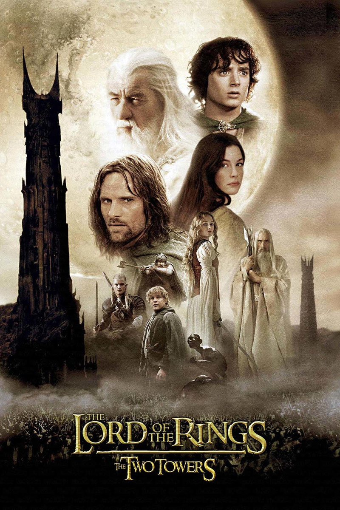

|  |
Numa terra fantástica e única, chamada Terra-Média, um hobbit (seres de estatura entre 80 cm e 1,20 m, com pés peludos e bochechas um pouco avermelhadas) recebe de presente de seu tio o Um Anel, um anel mágico e maligno que precisa ser destruído antes que caia nas mãos do mal. Para isso o hobbit Frodo (Elijah Woods) terá um caminho árduo pela frente, onde encontrará perigo, medo e personagens bizarros. Ao seu lado para o cumprimento desta jornada aos poucos ele poderá contar com outros hobbits, um elfo, um anão, dois humanos e um mago, totalizando 9 pessoas que formarão a Sociedade do Anel. |
|---|